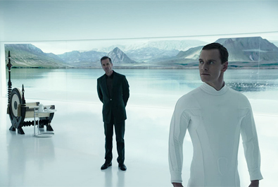
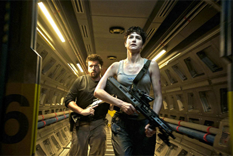
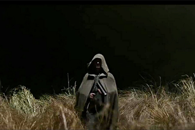
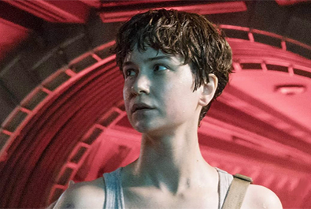
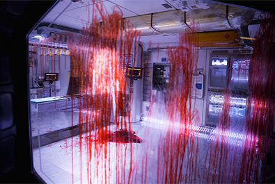
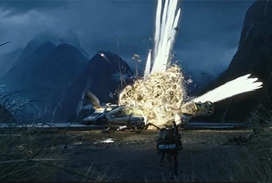

David Giler
Walter Hill
Ridley Scott
Mark Huffam
Michael Schaefer
John Logan
Dante Harper
Michael Green
$240.9 million


Peter Weyland
David 8 and Walter One
Christopher Oram, Covenant first mate
Maggie Faris, the pilot of the lander
Dan Lope, Head of the security unit
Ricks, Covenant navigator
Ankor, member of the security unit
Cole, member of the security unit


In 2012, prior to the release of Prometheus, director Ridley Scott began hinting at the prospect of a sequel. He said a sequel would follow Elizabeth Shaw to her next destination, "because if it is paradise, paradise cannot be what you think it is. Paradise has a connotation of being extremely sinister and ominous." In June 2012, Scott stated an additional film would be required to bridge the 100-year gap between the Prometheus sequel and Alien. Early on, Scott had previously said the new film would feature no xenomorphs ("The beast is done. Cooked."); he wanted to phase the xenomorph out to focus instead on David 8, whose A.I. is the new alien lifeform. However, Scott later made contradictory statements, confirming the xenomorph's presence in the film. In September 2015, Scott disclosed the film's title as Alien: Paradise Lost. In November 2015, he revealed the new title to be Alien: Covenant, and filming was set to begin in February 2016 in Australia. During an interview concerning the development of the character of David since Prometheus, Scott indicated the dark turn which David would take in Alien: Covenant, saying, "He hates them. He has no respect for Engineers and no respect for human beings."
Principal photography for the film began on 4 April 2016, at Milford Sound in Fiordland National Park, New Zealand, and wrapped on 19 July 2016. Some footage was also filmed at Leavesden Studios in England, which included reshoots.
Alien: Covenant received generally positive reviews from critics. The film has a 65% approval from 402 reviews compiled by 'Rotten Tomatoes', with an average rating of 6.30/10. The website's critical consensus reads, "Alien: Covenant delivers another satisfying round of close-quarters deep-space terror, even if it doesn't take the saga in any new directions."
Writing for The Guardian, Peter Bradshaw gave the film three stars out of five, stating that Alien: Covenant is "a greatest-hits compilation of the other Alien films' freaky moments. The paradox is that though you are intended to recognise these touches, you won't really be impressed unless you happen to be seeing them for the first time. For all this, the film is very capably made, with forceful, potent performances from Waterston and Fassbender."
Geoffrey McNab, writing for The Independent, stated that it "certainly delivers what you'd expect from an Aliens film - spectacle, body horror, strong Ripley-like female protagonists and some astonishing special effects - but there's also a dispiriting sense that the film isn't at all sure of its own identity." He found the screenplay "very portentous" and concluded that "the crew members pitted against the monstrous creatures are trying their darndest to blast them to kingdom come, just as they would in any run-of-the-mill sci-fi B movie."
A review by Collider stated that Scott "finds himself stuck between two constructs - the action-horror beats of an Alien film, and the weighty, ponderous themes of a Prometheus movie - and by indulging both, he never fully satisfies either. The result is a messy film that is at turns, exquisite and infuriating."

